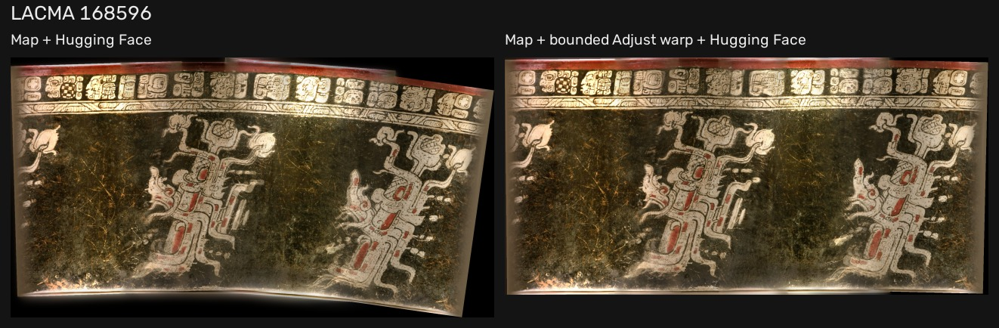
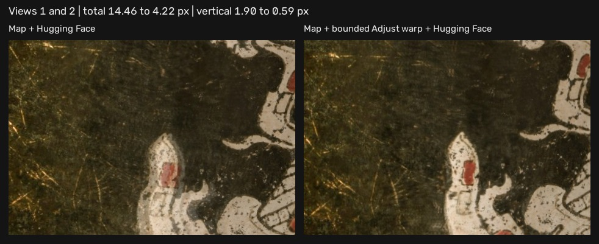
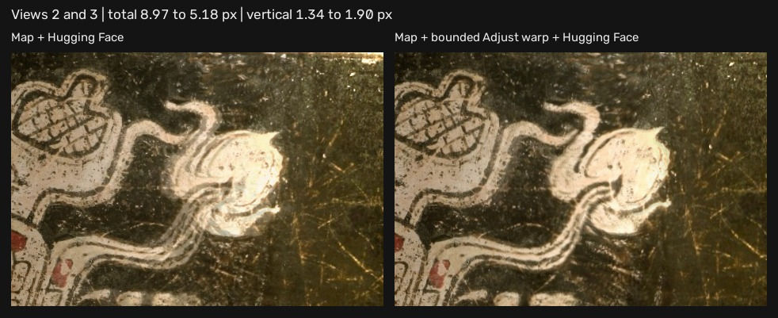
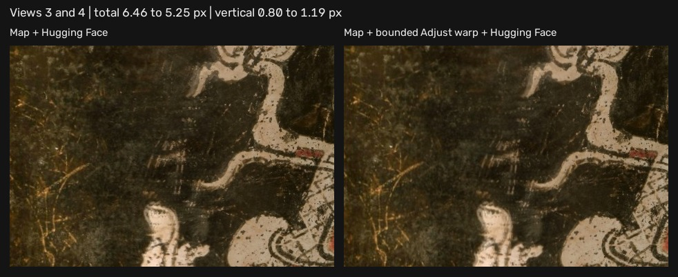
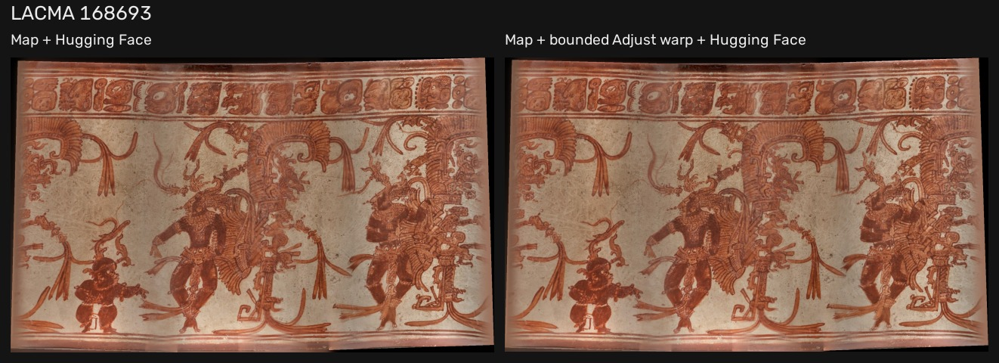
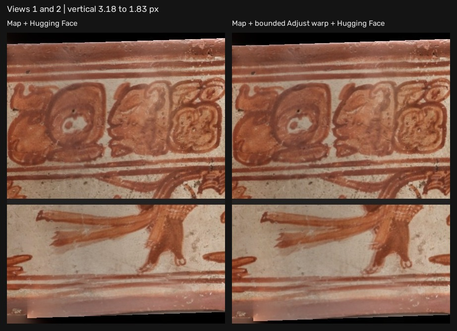
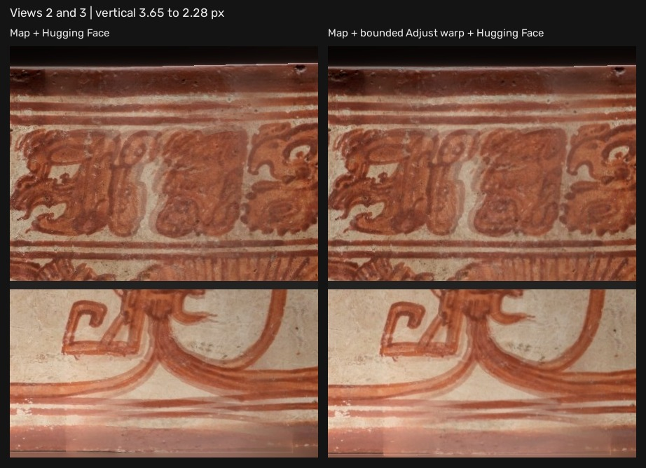
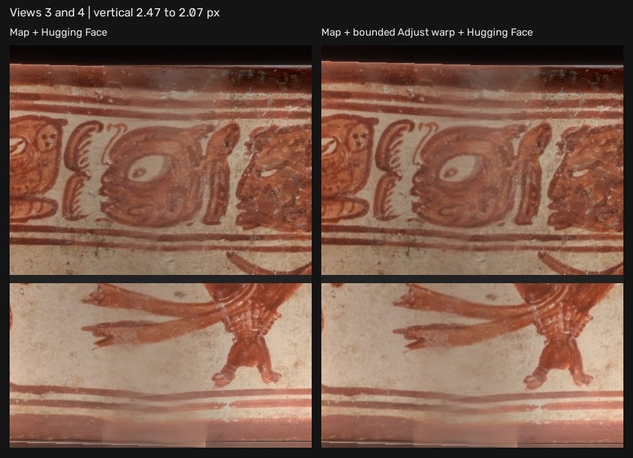

Both arms use the same four source photos per vessel, detected rims, Map unwarp, 8–92% crop, and 12% feathering. The second arm adds the experimental overlap-fitted vertical warp, capped at 3% of strip height. Hugging Face stitched both arms. The images show the outputs before Refine.
Map flattened the source views in both arms. The comparison isolates the effect of the additional Adjust warp on the delivered stitch. Overlap disagreement measures matched landmarks, while the crops show the actual paint and exposure transitions.
The right third sits more level in the adjusted stitch, with a clearer change at the rim and base. Total overlap disagreement falls at all three joins. Vertical disagreement improves at one join and increases at two. The first two overlap crops show less doubled paint.

Full before PNG · Full after PNG
Crops are centered on the corresponding overlap in each run and use the same pixel scale.



Vertical overlap disagreement falls at all three joins. The full rollouts look similar and there are still lower-border steps and exposure changes.

Full before PNG · Full after PNG
Crops are centered on the corresponding overlap in each run and use the same pixel scale.


